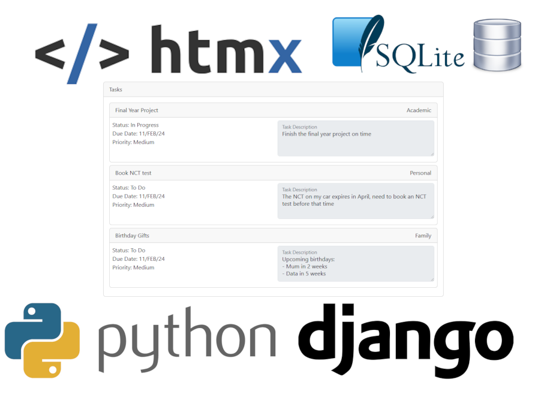

Student Name: Piotr Bielski
Student Number: 20099888
Profile Photo:
Commercial Title: TaskManagementWebApp.com
Academic Title: Task Management Web App
Project Repository:
https://github.com/circleorange/web-task-mgmt
Project Page: https://task-managment-rq50.onrender.com/
Key Words:
Web Application, Django, HTMX, SQLite
Abstract:
Task Manager is a web application that allows users and groups to keep track of tasks. The user can create a customized template containing only the desired set of fields they think are relevant, allowing to then launch tasks only containing the defined fields in the template. Users can also create groups consisting of multiple users and create group tasks that are only visible to the group members. As for the project itself, it presents an alternative design to the traditional approach;
- It's an web application that does not have client-side state management or frontend framework but instead, fully relies on server-side validation and state management, and uses HTMX to swap out individual HTML elements rather than serving full pages for most user interactions.
Project Image:
